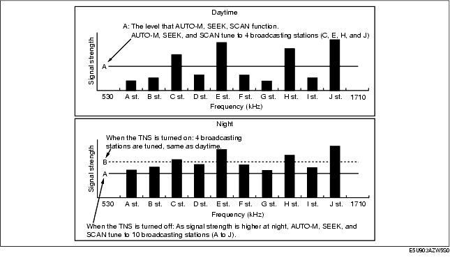

REFERENCE [RADIO]
id0903e18300a3
1. Multipath Noise
• Signals from an FM transmitter are a high frequency and similar to beams of light because they do not bend around corners, but they do reflect. Since FM signals can be reflected by obstructions, it is possible to receive both the direct signal and the reflected signal at the same time. This causes a slight delay in reception and may be heard as a broken sound or a distortion.
2. Flutter/Skip Noise
• Signals become weak in valleys between mountains, tall buildings, and other obstacles. When the vehicle passes through such an area, the reception conditions may change suddenly, resulting in annoying noise.
3. Stereo and Monaural Receptions
• As signals become weak, noise may appear more in stereo reception. Compared to stereo reception, noise in monaural reception is relatively less striking.
Measures in Audio System
Separation control
-
• Utilizing the characteristic of monaural reception that noise is relatively less striking than stereo reception, the audio system automatically changes the reception from stereo to monaural and lessens annoying noise when signals become weak or a multipath phenomenon occurs.
High tone control
-
• When signals become weak or a multipath phenomenon occurs, the audio system restrains volume level in high frequency band and lessens annoying noise.
Effect Setting of Separation Control and High Tone Control
• The separation and high tone controls influence sound quality. Therefore they are specifically tuned for individual model. (Comparison of characteristic must be done on the same models)

Remarks
-
• Signals tend to reach longer distances at night. It is conspicuous in AM signals, several audio functions may stop due to foreign broadcasting station or noise. Though the audio system restrains sensitivity of SEEK and SCAN functions at night, the audio system may select other than desired broadcasting station when signals are considerably strong. This function is linked to the parking light. When the parking light or the headlight is turned on, SEEK and SCAN may not function for weak signals.
